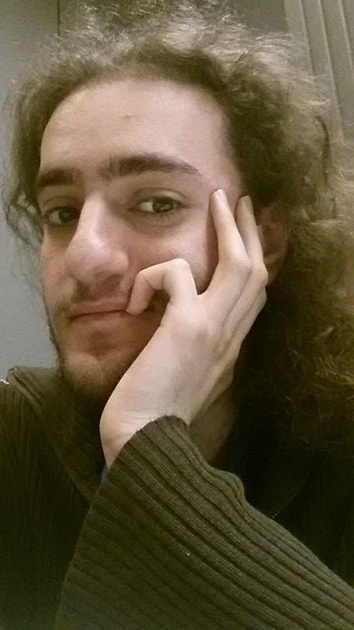

Hossep Dolation Presenting in IACS Seminar Series

Our very own Hossep Dolatian will be giving a talk on computational models of reduplication in the IACS seminar series next Spring semester on April 11, 2018.
Hossep’s Ph.D. research has focused on the process of reduplication, where parts of an existing word are doubled in order to create a new one. Take the language Marshallese, a Micronesian language spoken in the Marshall Islands. In Marshallese, kagir means belt, but if one doubles gir one gets kagir-gir, which means to wear a belt.
Copying processes are computationally challenging. Depending on the size of the copied material, the process can be much more computationally demanding than anything else found in morphology, the part of language that deals with words. Even sentence structure rarely reaches these levels of complexity. Hossep has been carefully mapping out the kinds of attested reduplication across dozens of languages and how minor differences between the patterns can have a huge impact on their complexity. We are all looking forward to hearing about his newest research findings.